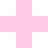
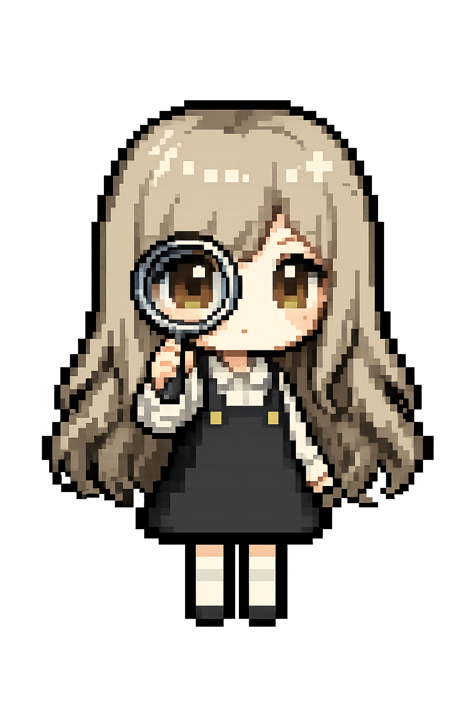
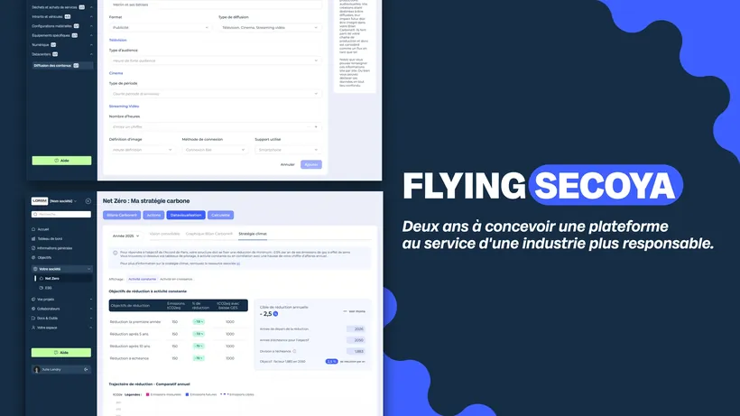
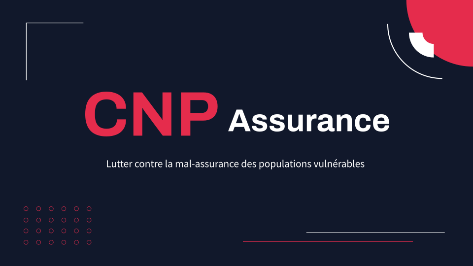
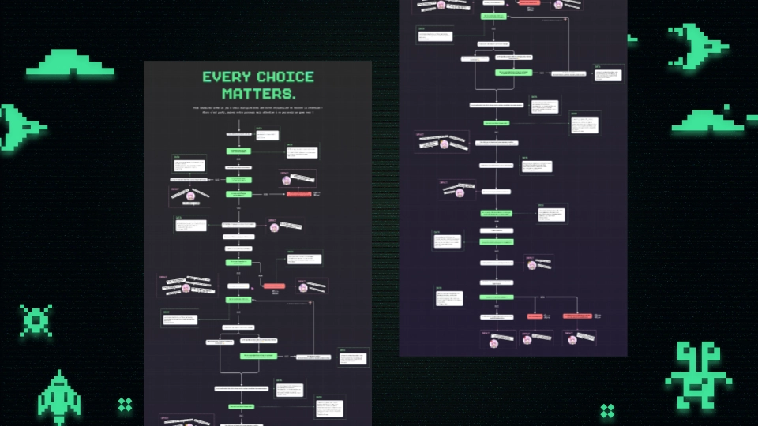
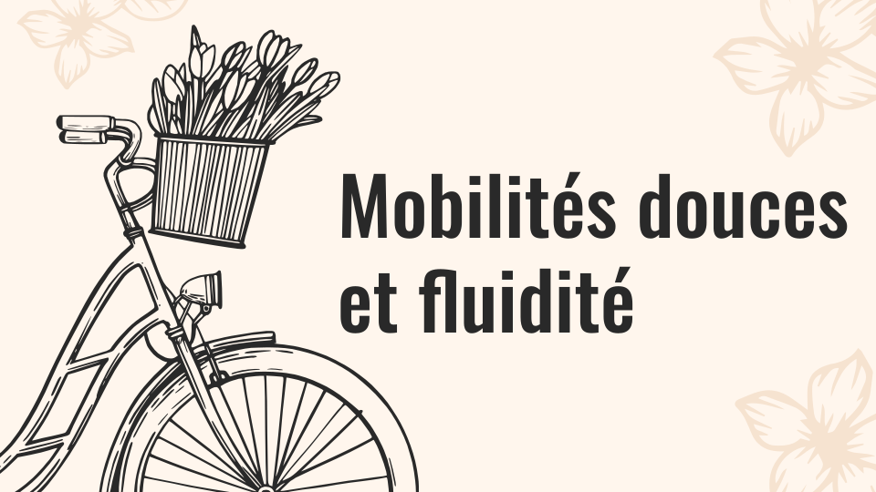
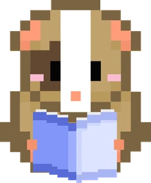
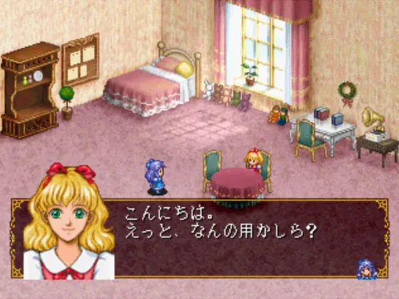
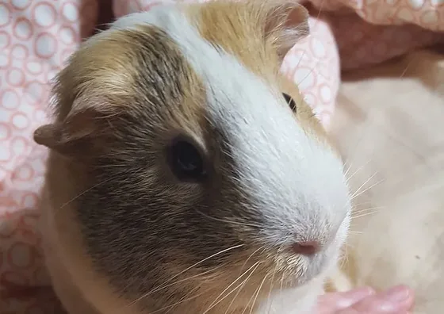
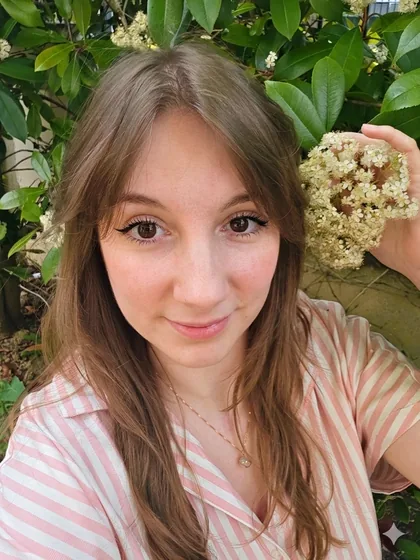

À PROPOS DE MOI
Mon chemin vers l'UX
Mon parcours en design n'a rien d'une ligne droite. Après un Bachelor Web Design, j'ai exploré plusieurs facettes du métier en freelance (sites web, chartes graphiques, identité visuelle) avant de trouver ce qui me passionnait vraiment : l'UX Design.
Aujourd'hui en alternance chez Flying Secoya et en Mastère UX Design à l'IIM Digital School, je me consacre pleinement à ce qui m'anime : enquêter pour révéler les vraies problématiques et concevoir des réponses concrètes.
Mon approche
Curieuse et analytique, je pose les bonnes questions et recherche avant de chercher des solutions. En équipe, j'aime faire valider mes choix, recueillir les avis, ajuster. Un bon design se construit à plusieurs.

FICHE PERSONNAGE
Compétences

ÉPOPÉES UX
Mes études de cas

Flying Secoya · Alternance
Construire les parcours, les méthodes et les outils d'une plateforme SaaS dédiée à l'éco-responsabilité des productions audiovisuelles.
Voir l'étude de cas →
Tricount · UX Research
Comprendre les usages, frustrations et besoins des utilisateurs de Tricount à travers une étude UX Research complète.
Voir l'étude de cas →
AIMETAMARQUE · Legal Design
Transformer des conditions d'utilisation en visual novel interactif pour rendre le juridique accessible.
Voir l'étude de cas →
CNP · UX Research & Design
Lutter contre la mal-assurance des populations vulnérables, projet mené dans le cadre de la compétition nationale PULSE 2026.
Voir l'étude de cas →
Améliorer l'expérience des transports · Design Thinking
Repenser la sécurité dans les transports en commun via la méthode Design Thinking.
Voir l'étude de cas →
Every choice matters · Data Visualisation
Transformer une étude sur les jeux à choix en une data visualisation accessible à tous les créateurs d'expériences narratives interactives.
Voir l'étude de cas →
Mobilités Douces · Design Systémique
Analyser le système de la mobilité douce pour identifier ses leviers et ses paradoxes.
Voir l'étude de cas →
PAP'S Auto · Refonte
Refonte complète d'un site de location de véhicules entre particuliers et agences.
Voir l'étude de cas →
AU-DELÀ DES PIXELS
Mes passions

Comme vous l'avez peut-être remarqué dans la bannière, j'aime énormément le pixel art. Une passion née des jeux vidéo, et plus particulièrement des otome games : Angelique, le premier otome game du monde sorti en 1994, a clairement influencé mon affection pour ce style. (mention spéciale à Omori, qui est un coup de cœur).

Vous avez également peut-être remarqué le cochon d'Inde dans ma bannière, inspiré de mon propre cochon d'Inde, Happy, qui est et sera toujours mon énergie et ma force. 💪
MON AMBITION
Où je veux aller

Cette aventure UX, je la vois sur le long terme : une équipe avec qui avancer, un produit qui mérite qu'on s'y investisse, et l'envie d'y apporter mon œil et ma curiosité.
Et si on se rencontrait au-delà de ces pixels ? ✨
CONTACT
Envie d'échanger ?
Une opportunité, une question, ou simplement l'envie d'échanger ? Je serais ravie de discuter avec vous ! 😊